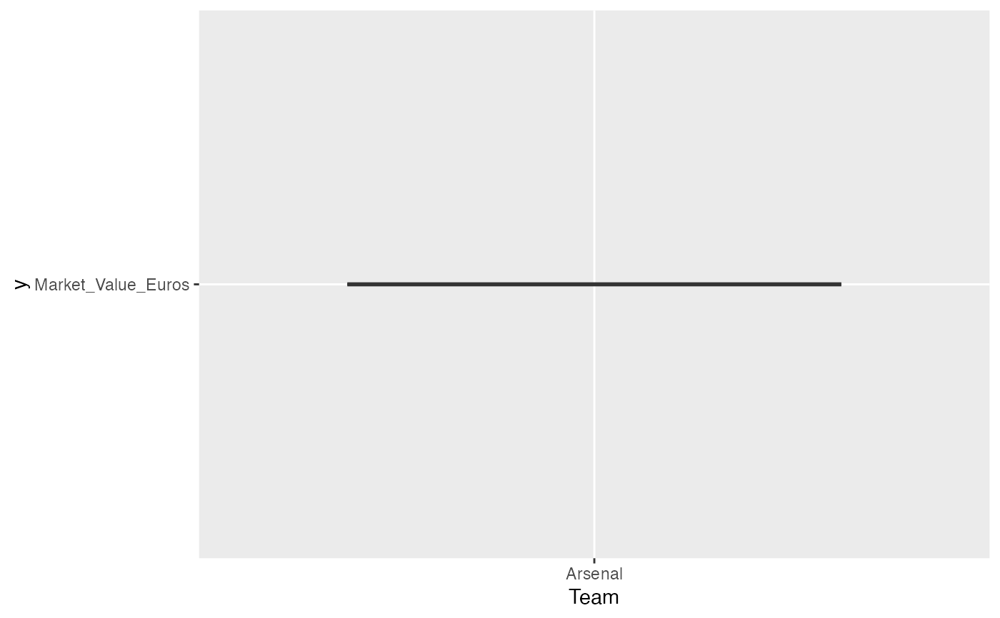

Find team statistic
soc_find_team_stat.RdReturns the descriptive statistic table and box plot of a particular team. This function can help users to find the statistical data of a particular team. A box plot is provided for visualization of the statistical data. Users can visualize a certain feature of the team by inputting it in the optional argument "feature". If no input is found, the default feature of the box plot will be the "age" of the user's inputted team.
Arguments
- df
The dataframe of the soccer dataset
- team_name
String in the dataframe. Users can input any string from the "Team" column.
- feature
Optional argument. The default feature is "age". Users can input other numerical features.
Value
list A list contains a descriptive statistics table and a box plot to show a certain descriptive statistic feature of a particular team.
Examples
library(tidyverse)
small_df <- data.frame(Team = c("Man United", "Arsenal", "Chelsea"), Market_Value_Euros = c(300000, 575000, 150000))
soc_find_team_stat(small_df , "Arsenal", "Market_Value_Euros")
#> [[1]]
#> Team Market_Value_Euros
#> Length:1 Min. :575000
#> Class :character 1st Qu.:575000
#> Mode :character Median :575000
#> Mean :575000
#> 3rd Qu.:575000
#> Max. :575000
#>
#> [[2]]

#>